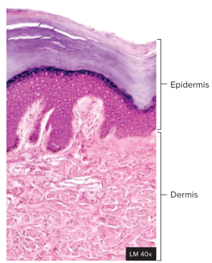
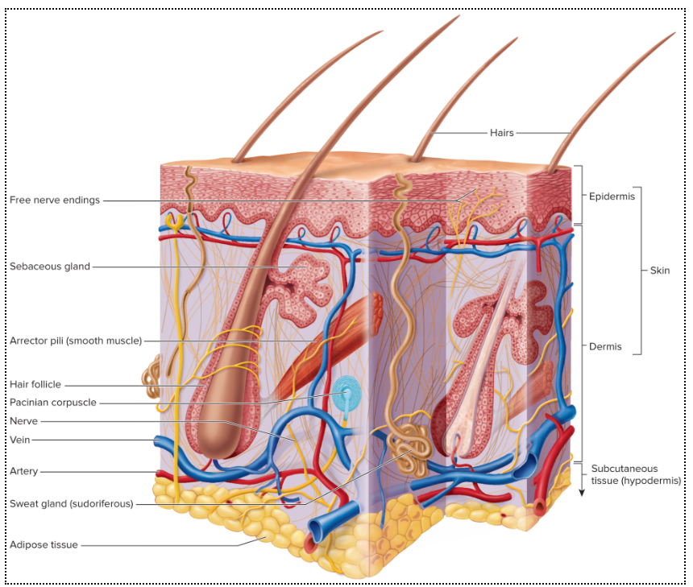
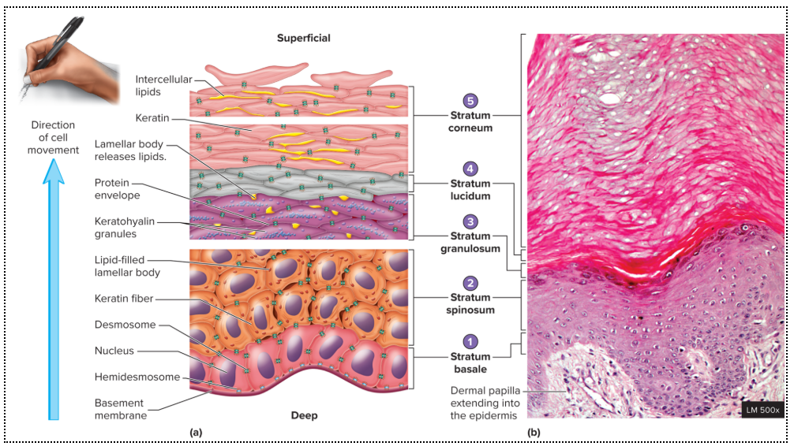
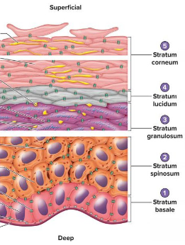
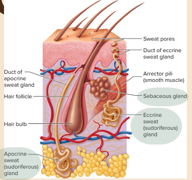
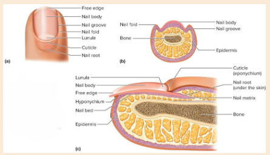

Chapter 5 – Integumentary Guided Notes
Quick Check
Nervous tissue is made up of two cell types: and .
What type of connective tissue is responsible for fat storage?
What type of connective tissue is avascular?
What type of connective tissue is found beneath the basement membrane to support epithelial tissue?
The two major protein fibers in the extracellular matrix are:
• — known for its
• — known for its
What type of cartilage is found in the knees?
Integumentary System Functions
1. Protection
• Protects against light, microorganisms, water loss, and abrasion.
• Nails can serve as a tool for .
2. Sensation
• Receptors in the skin detect , cold, touch, pressure, and pain.
3. Temperature Regulation
• evaporates from the skin surface and cools the body.
• Blood vessels can , allowing heat to leave the body.
• Blood vessels can , preventing heat loss.
4. Vitamin D Production
• Occurs when skin is exposed to light.
• Vitamin D is important in homeostasis.
5. Excretion
• Most waste is removed by the system.
• Small amounts of waste products can leave the body through .
Skin Overview
Skin = +
The epidermis is made of squamous epithelial tissue.
The dermis is made of tissue.
Subcutaneous tissue is also called the and is not actually part of the skin.


Epidermis – 4 Types of Epidermal Cells
Cell Type |
Main Function |
Key Detail |
Keratinocytes |
Produce for strength |
Make up MOST of the epidermis |
Melanocytes |
Produce |
Share pigment with keratinocytes to help protect from UV light |
Langerhan Cells |
Immune cells that can |
Engulf and destroy foreign invaders |
Merkel Cells |
Detect touch and superficial pressure |
Sensory cell |
Epidermis – The 5 Strata
The epidermis is organized into 5 “strata,” or .
Recall: all epithelial tissue is .
Memory aid: “Come Let’s Get SunBurned”

Stratum Basale
• Deepest epidermal layer.
• Made of layer of cuboidal or columnar cells.
• Located directly above the membrane.
• Close to the blood supply.
• Has high activity, meaning cells divide frequently.
• Cells divide approximately every days.
• One daughter cell remains in the stratum basale to again.
• One daughter cell is pushed toward the surface and becomes .
Keratinization
As epidermal cells are pushed upward:
1. They change and chemical composition.
2. Cells fill with , a strong fibrous protein.
3. The cells eventually .
4. This creates an outer layer of dead, hard cells that resists and prevents water loss/water gain.
Stratum Spinosum
• – layers of cells.

• Cells are still but are slowing down.
• Cells are filling with fibers.
• Cells contain lipid-filled bodies.
Stratum Granulosum
• – layers of cells.
• Cells begin to .
What is the process of cells filling with protein as they move upward through the strata?
Stratum Lucidum
• Thin, zone of dead cells.
• Found only in “ skin.”
• Locations: palms, fingertips, and soles of feet.
• These are areas of high .
• Hair does not grow in skin.
“Thin skin” lacks a stratum and covers the rest of the body.
Stratum Corneum
• Most epidermal layer.
• Contains + layers of dead squamous keratinocytes.
• The number of layers varies depending on .
• The have the thinnest skin and the thinnest stratum corneum.
• Cells are frequently off because of friction with the outside environment.
Factors That Determine Skin Color
Pigments within the skin:
• Melanin — protects against radiation and may appear brown, black, yellow, or red.
• Carotene — a pigment found in plants such as carrots and corn.
• Blood circulation — gives skin a reddish hue because of .
Thickness of the stratum corneum also affects skin color.
• Thicker areas such as palms and soles can appear more .
Dermis
Dermal Layer |
Relative Position / Amount |
Tissue / Contents |
Key Features |
Papillary |
; about ⅕ of dermis |
Loose connective tissue; smaller blood vessels |
Forms dermal |
Reticular |
; about ⅘ of dermis |
Nerves, larger blood vessels, hair follicles, glands |
Deeper layer |
The dermis is organized into layers.
Accessory Skin Structures – Hair
Functions
• Protects against and UV radiation.
Hair is found almost everywhere on the body except:
•
• soles of feet
• lips
• nipples
• distal segments of digits
• some parts of external genitalia
Arrector Pili
• Made of muscle. Attached to the hair .
• When it contracts, the follicle is pulled and the hair stands . This causes .
• It can occur in response to cold temperatures or strong emotional reactions such as .
Accessory Skin Structures – Glands
Gland |
Makes |
Location |
Function |
Timing / Key Note |
Sebaceous |
Connected to hair follicles |
Prevents dehydration of skin; inhibits bacterial growth |
Oil gland |
|
Ceruminous |
External auditory meatus |
Prevents entrance of foreign substances |
Earwax gland |
|
Eccrine Sudoriferous |
Throughout body; forehead, palms, soles |
regulation |
Active from birth |
|
Apocrine Sudoriferous |
Sweat with lipids + proteins |
Armpits and groin |
Sexual selection |
Becomes active during |
A gland is a cell, group of cells, or organ that makes and specific substances.


Accessory Skin Structures – Nails
• Nails are thin plates of dead stratum cells with hard keratin.
• Nail body = portion.
• Matrix + nail bed = cells that give rise to the .
• Main function: .
Chapter 5 Review
List the major functions of the integumentary system.
Name the two layers that make up the skin and identify the tissue type of each.
Why is the hypodermis not considered part of the skin?
Compare the four major epidermal cell types.
Put the five epidermal strata in order from deep to superficial.
Explain what happens during keratinization.
Why is stratum lucidum only found in thick skin?
What factors determine skin color?
Compare the papillary and reticular regions of the dermis.
Explain how the arrector pili produces goosebumps.
Compare sebaceous, ceruminous, eccrine sudoriferous, and apocrine sudoriferous glands.
Identify the visible portion of the nail and the structures that give rise to the nail.